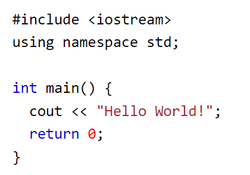

-
C++ is a powerful programming language. It is an extension of the C language and provides object-oriented
features. This topic introduces you to the basics of C++ and its importance in modern programming.
-
C++ is one of the world's most popular programming languages.
C++ can be found in today's operating systems, Graphical User Interfaces, and embedded systems.
C++ is an object-oriented programming language which gives a clear structure to programs and allows code to
be reused, lowering development costs.
C++ is portable and can be used to develop applications that can be adapted to multiple platforms.
C++ is fun and easy to learn!
As C++ is close to C, C# and Java, it makes it easy for programmers to switch to C++ or vice versa.
-
Learn about variables and different data types in C++. Variables are used to store values in memory.
Understanding data types is essential for efficient memory management and creating robust programs.
-

Example explained
Line 1: #include is a header file library that lets us work with input and output objects, such
as cout (used in line 5). Header files add functionality to C++ programs.
Line 2: using namespace std means that we can use names for objects and variables from the standard
library.
Line 3: A blank line. C++ ignores white space. But we use it to make the code more readable.
Line 4: Another thing that always appear in a C++ program, is int main(). This is called a function. Any
code inside its curly brackets {} will be executed.
Line 5: cout (pronounced "see-out") is an object used together with the insertion operator (<<) to
output/print text. In our example it will output "Hello World!" . Note: Every C++ statement ends with
a semicolon ;. Note: The body of int main() could also been written as: int main () { cout
<< "Hello World! " ; return 0; } Remember: The compiler ignores white spaces. However, multiple lines
makes the code more readable.
Line 6: return 0 ends the main function. Line 7: Do not forget to add the
closing curly bracket } to actually end the main function.
-
Control structures in C++ allow you to make decisions and repeat actions in your program. You can use if
statements, loops, and switches to control the flow of your code.
-
Functions in C++ are blocks of code that can be called and executed. They allow you to break your program
into smaller, reusable parts, making your code more organized and easier to maintain.
-
Arrays and vectors are used to store multiple values in C++. Learn how to declare, initialize, and
manipulate arrays and explore the dynamic capabilities of vectors.
-
Pointers and references allow you to work with memory addresses and access data more efficiently. Learn how
to use them in C++ to manipulate data and manage resources.
-
Exception handling in C++ allows you to gracefully handle errors and exceptional situations. Learn how to
use try-catch blocks to handle exceptions and ensure your program's robustness.
-
The C++ Standard Template Library (STL) provides a collection of useful data structures and algorithms.
Explore how to use containers like vectors, lists, and maps, and algorithms for sorting and searching.
-
Memory management in C++ is crucial for efficient resource usage. Learn about dynamic memory allocation,
deallocation, and avoiding memory leaks.
-
The preprocessor in C++ allows you to perform tasks like including header files, conditional compilation,
and defining macros. Explore how to use preprocessor directives effectively.
-
Lambda expressions in C++ allow you to define small, anonymous functions. Learn how to use lambdas for
concise and expressive code.
-
Template metaprogramming is an advanced C++ technique for creating generic and highly optimized code.
Explore how to use templates for generic programming.
-
Stay updated with the latest features and enhancements introduced in C++ standards such as C++11, C++14,
C++17, and C++20.
-
Learn how to use C++ streams for reading from and writing to the console, including cin, cout, cerr, and
clog.
-
Conditional statements allow you to execute different code blocks based on certain conditions. Learn how to
use if, else if, and else statements for decision-making in your programs.
-
Loops in C++ allow you to repeat a set of instructions. Learn how to use for, while, and do-while loops to
iterate through code blocks.
-
Functions are the building blocks of C++ programs. Learn how to define and call functions and explore
function overloading for creating multiple functions with the same name but different parameters.
-
Explore the use of arrays to store collections of data, and learn about multidimensional arrays to work with
tables of data.
-
Learn about user-defined data types such as structs and classes, which enable you to create your own data
structures and objects with associated functions.
-
Enums are used to create named integer constants, making your code more readable and maintainable. Learn how
to define and use enumerations in C++.
-
Explore the C++ Standard Library, which provides a wealth of pre-built functions and classes for common
tasks, including input/output, containers, algorithms, and more.
-
Learn about popular C++ development tools, including integrated development environments (IDEs), compilers,
and debugging tools to write, compile, and test your C++ programs.
-
Delve into the intricacies of pointers, including dynamic memory allocation and deallocation with new and
delete operators, and avoiding common memory-related issues.
-
Learn how to handle exceptions and create custom exception classes for robust error reporting and graceful
error recovery in your C++ programs.
-
Explore the power of the C++ Standard Template Library (STL) with its various containers (vectors, lists,
maps) and algorithms for sorting, searching, and manipulation.
-
Understand C++ I/O streams, file I/O, and how to read from and write to files and interact with the console
for user input and program output.
-
Explore the concept of namespaces in C++ to organize and avoid naming conflicts in your code. Learn about
variable scope and visibility.
-
Learn how to create and use header files in C++ to separate declarations and definitions, making your code
more organized and maintainable.
-
Learn essential debugging techniques, including using debuggers, setting breakpoints, inspecting variables,
and tracing program execution to identify and fix errors in your code.
-
Explore coding conventions, naming conventions, and best practices in C++ development to write clean,
readable, and maintainable code.
-
Learn about memory management techniques in C++ and the use of smart pointers to automate memory cleanup,
reducing the risk of memory leaks.
-
Explore the principles of OOP in C++, including classes, objects, inheritance, polymorphism, and
encapsulation.
-
Learn about the C++ Standard I/O Library and how to format and manipulate input and output data using
streams, such as cin, cout, and file streams.
-
Learn about multi-threading in C++ to create concurrent programs that take advantage of modern multi-core
processors.
-
Explore file handling in C++, including reading from and writing to text and binary files, as well as
managing file streams and error handling.
-
Learn how to use lambda expressions in C++ to create anonymous functions, making your code more concise and
readable.
-
Explore the concepts of unit testing and test-driven development in C++, to ensure the reliability and
correctness of your code.